Una transformación lineal, es una regla que asocia cada elemento de un espacio vectorial y lo asocia a un único elemento de otro espacio vectorial.
Howard Anton define formalmente una transformación lineal de la siguiente manera:


A continuación se muestran algunas de las reglas más utilizadas en la manipulación de gráficos y su principal información relacionada.
Reflexiones
|
Representación matricial Reflexión sobre el eje x Reflexión sobre el eje y Reflexión sobre la línea y=x |
Proyecciones
|
Representación matricial Proyección sobre el eje x Proyección sobre el eje y |
Rotaciones
|
Representación Matricial |
Expansión y compresión
|
Representación Matricial Expansión y compresión en x Expansión y compresión en y |
Deslizamiento
| Missing Frame |
Representación Matricial Deslizamiento en x Deslizamiento en y |
Contracción y dilatación
|
Representación Matricial |
Missing Frame |
Rotación en 3 dimensiones
| Missing Frame |
Representación Matricial Rotación sobre el eje x positivo Rotación sobre el eje y positivo Rotación sobre el eje z positivo |